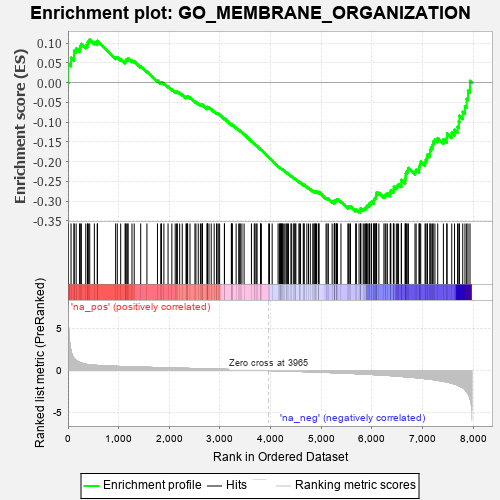
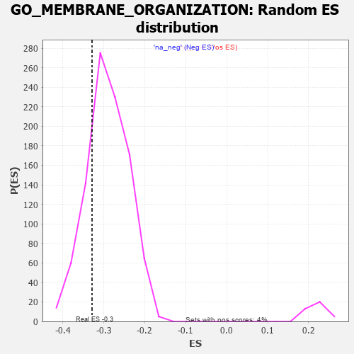

| | | Dataset | 7d |
| Phenotype | NoPhenotypeAvailable |
| Upregulated in class | na_neg |
| GeneSet | GO_MEMBRANE_ORGANIZATION |
| Enrichment Score (ES) | -0.32850456 |
| Normalized Enrichment Score (NES) | -1.129148 |
| Nominal p-value | 0.20790021 |
| FDR q-value | 0.72604644 |
| FWER p-Value | 1.0 |
Table: GSEA Results Summary

Fig 1: Enrichment plot: GO_MEMBRANE_ORGANIZATION
Profile of the Running ES Score & Positions of GeneSet Members on the Rank Ordered List
| PROBE | GENE SYMBOL | GENE_TITLE | RANK IN GENE LIST | RANK METRIC SCORE | RUNNING ES | CORE ENRICHMENT | | 1 | SYT2 | | | 8 | 5.577 | 0.0483 | No |
| 2 | RAC2 | | | 60 | 2.442 | 0.0633 | No |
| 3 | SUN3 | | | 119 | 1.426 | 0.0684 | No |
| 4 | RTP3 | | | 121 | 1.425 | 0.0809 | No |
| 5 | CSRP3 | | | 161 | 1.186 | 0.0864 | No |
| 6 | RHOH | | | 228 | 0.987 | 0.0866 | No |
| 7 | NSF | | | 243 | 0.947 | 0.0932 | No |
| 8 | COX18 | | | 264 | 0.890 | 0.0985 | No |
| 9 | GSK3A | | | 351 | 0.745 | 0.0940 | No |
| 10 | MESD | | | 384 | 0.713 | 0.0961 | No |
| 11 | BAX | | | 387 | 0.711 | 0.1022 | No |
| 12 | OCRL | | | 408 | 0.691 | 0.1057 | No |
| 13 | CCNB2 | | | 429 | 0.672 | 0.1091 | No |
| 14 | GET4 | | | 520 | 0.623 | 0.1030 | No |
| 15 | MX1 | | | 578 | 0.604 | 0.1009 | No |
| 16 | CCNB1 | | | 581 | 0.601 | 0.1060 | No |
| 17 | STX17 | | | 940 | 0.497 | 0.0642 | No |
| 18 | MTX1 | | | 973 | 0.489 | 0.0644 | No |
| 19 | AKT1 | | | 1040 | 0.476 | 0.0601 | No |
| 20 | NUP93 | | | 1127 | 0.459 | 0.0531 | No |
| 21 | ATP9B | | | 1139 | 0.456 | 0.0557 | No |
| 22 | MTSS1 | | | 1149 | 0.454 | 0.0586 | No |
| 23 | TFDP1 | | | 1180 | 0.450 | 0.0587 | No |
| 24 | CRIPT | | | 1185 | 0.449 | 0.0621 | No |
| 25 | MTX2 | | | 1263 | 0.437 | 0.0560 | No |
| 26 | UBL4A | | | 1307 | 0.427 | 0.0543 | No |
| 27 | CHMP7 | | | 1435 | 0.403 | 0.0415 | No |
| 28 | RFT1 | | | 1558 | 0.381 | 0.0291 | No |
| 29 | VRK1 | | | 1766 | 0.343 | 0.0054 | No |
| 30 | UVRAG | | | 1831 | 0.332 | 0.0001 | No |
| 31 | AP2S1 | | | 1846 | 0.329 | 0.0012 | No |
| 32 | CUL3 | | | 1893 | 0.321 | -0.0019 | No |
| 33 | MCFD2 | | | 1975 | 0.309 | -0.0096 | No |
| 34 | GOSR2 | | | 2050 | 0.298 | -0.0165 | No |
| 35 | STX16 | | | 2116 | 0.289 | -0.0223 | No |
| 36 | VPS8 | | | 2144 | 0.285 | -0.0233 | No |
| 37 | CNIH1 | | | 2159 | 0.283 | -0.0226 | No |
| 38 | C2CD5 | | | 2204 | 0.276 | -0.0258 | No |
| 39 | REPS1 | | | 2255 | 0.267 | -0.0299 | No |
| 40 | SEC13 | | | 2330 | 0.256 | -0.0372 | No |
| 41 | ANO6 | | | 2339 | 0.255 | -0.0360 | No |
| 42 | OXA1L | | | 2355 | 0.252 | -0.0357 | No |
| 43 | MPP5 | | | 2362 | 0.251 | -0.0342 | No |
| 44 | OMA1 | | | 2408 | 0.244 | -0.0379 | No |
| 45 | HUWE1 | | | 2506 | 0.225 | -0.0484 | No |
| 46 | SPG7 | | | 2525 | 0.223 | -0.0487 | No |
| 47 | YKT6 | | | 2571 | 0.217 | -0.0526 | No |
| 48 | VAV3 | | | 2614 | 0.210 | -0.0562 | No |
| 49 | GNPAT | | | 2629 | 0.208 | -0.0562 | No |
| 50 | VPS4A | | | 2654 | 0.205 | -0.0574 | No |
| 51 | XKR6 | | | 2655 | 0.205 | -0.0556 | No |
| 52 | LMAN1 | | | 2743 | 0.192 | -0.0651 | No |
| 53 | AGK | | | 2752 | 0.191 | -0.0645 | No |
| 54 | PPIA | | | 2754 | 0.190 | -0.0629 | No |
| 55 | FNTA | | | 2755 | 0.190 | -0.0613 | No |
| 56 | SCFD1 | | | 2783 | 0.185 | -0.0631 | No |
| 57 | ARV1 | | | 2827 | 0.179 | -0.0671 | No |
| 58 | PDCD5 | | | 2885 | 0.169 | -0.0729 | No |
| 59 | TAZ | | | 2933 | 0.161 | -0.0776 | No |
| 60 | GOSR1 | | | 2940 | 0.159 | -0.0769 | No |
| 61 | MTCH1 | | | 2966 | 0.155 | -0.0788 | No |
| 62 | AZIN2 | | | 2993 | 0.150 | -0.0808 | No |
| 63 | STX6 | | | 3087 | 0.138 | -0.0916 | No |
| 64 | CHP1 | | | 3089 | 0.138 | -0.0905 | No |
| 65 | BET1L | | | 3224 | 0.118 | -0.1067 | No |
| 66 | RCC1L | | | 3228 | 0.117 | -0.1061 | No |
| 67 | FCHO2 | | | 3238 | 0.115 | -0.1062 | No |
| 68 | TFG | | | 3243 | 0.114 | -0.1057 | No |
| 69 | RAB8A | | | 3319 | 0.102 | -0.1145 | No |
| 70 | VPS16 | | | 3370 | 0.093 | -0.1201 | No |
| 71 | MITD1 | | | 3390 | 0.091 | -0.1218 | No |
| 72 | AAK1 | | | 3400 | 0.089 | -0.1222 | No |
| 73 | AP2A2 | | | 3433 | 0.085 | -0.1255 | No |
| 74 | HGS | | | 3476 | 0.080 | -0.1302 | No |
| 75 | CBL | | | 3621 | 0.056 | -0.1483 | No |
| 76 | ABCD1 | | | 3677 | 0.047 | -0.1550 | No |
| 77 | EPN2 | | | 3691 | 0.045 | -0.1563 | No |
| 78 | AMPH | | | 3715 | 0.040 | -0.1589 | No |
| 79 | SYT11 | | | 3732 | 0.036 | -0.1606 | No |
| 80 | REEP2 | | | 3800 | 0.027 | -0.1690 | No |
| 81 | SPAST | | | 3801 | 0.027 | -0.1688 | No |
| 82 | BET1 | | | 3817 | 0.025 | -0.1705 | No |
| 83 | STX18 | | | 3962 | 0.000 | -0.1891 | No |
| 84 | CHMP6 | | | 3977 | -0.003 | -0.1908 | No |
| 85 | TOR1A | | | 4030 | -0.013 | -0.1974 | No |
| 86 | STX7 | | | 4147 | -0.033 | -0.2121 | No |
| 87 | SYNJ1 | | | 4173 | -0.038 | -0.2150 | No |
| 88 | AP2B1 | | | 4185 | -0.039 | -0.2161 | No |
| 89 | STAM2 | | | 4193 | -0.041 | -0.2166 | No |
| 90 | VPS11 | | | 4202 | -0.041 | -0.2173 | No |
| 91 | GBF1 | | | 4215 | -0.044 | -0.2184 | No |
| 92 | VTI1A | | | 4224 | -0.046 | -0.2191 | No |
| 93 | ARPC2 | | | 4232 | -0.047 | -0.2196 | No |
| 94 | GAK | | | 4249 | -0.050 | -0.2212 | No |
| 95 | FNBP1 | | | 4279 | -0.056 | -0.2244 | No |
| 96 | SAR1A | | | 4304 | -0.060 | -0.2270 | No |
| 97 | ROMO1 | | | 4320 | -0.063 | -0.2284 | No |
| 98 | OPA1 | | | 4330 | -0.065 | -0.2289 | No |
| 99 | ADRB2 | | | 4352 | -0.068 | -0.2310 | No |
| 100 | STX5 | | | 4400 | -0.077 | -0.2364 | No |
| 101 | RALA | | | 4416 | -0.079 | -0.2377 | No |
| 102 | NDRG1 | | | 4456 | -0.085 | -0.2419 | No |
| 103 | XKR4 | | | 4466 | -0.087 | -0.2423 | No |
| 104 | HIP1 | | | 4485 | -0.092 | -0.2438 | No |
| 105 | NPC2 | | | 4498 | -0.093 | -0.2446 | No |
| 106 | STX2 | | | 4562 | -0.108 | -0.2517 | No |
| 107 | BAG6 | | | 4563 | -0.108 | -0.2508 | No |
| 108 | SYT4 | | | 4590 | -0.116 | -0.2531 | No |
| 109 | LETM1 | | | 4644 | -0.127 | -0.2588 | No |
| 110 | ARPC3 | | | 4659 | -0.129 | -0.2595 | No |
| 111 | CHMP3 | | | 4660 | -0.129 | -0.2583 | No |
| 112 | PI4KA | | | 4715 | -0.143 | -0.2640 | No |
| 113 | DEGS1 | | | 4747 | -0.148 | -0.2667 | No |
| 114 | RTN4 | | | 4783 | -0.154 | -0.2699 | No |
| 115 | BIN3 | | | 4832 | -0.165 | -0.2746 | No |
| 116 | USO1 | | | 4855 | -0.168 | -0.2760 | No |
| 117 | DLG1 | | | 4860 | -0.169 | -0.2750 | No |
| 118 | TMCC1 | | | 4885 | -0.174 | -0.2765 | No |
| 119 | CLU | | | 4889 | -0.174 | -0.2754 | No |
| 120 | VAMP8 | | | 4905 | -0.179 | -0.2757 | No |
| 121 | FZD4 | | | 4940 | -0.186 | -0.2785 | No |
| 122 | CHMP5 | | | 4952 | -0.188 | -0.2782 | No |
| 123 | ADCK1 | | | 4953 | -0.188 | -0.2766 | No |
| 124 | ITSN1 | | | 5094 | -0.222 | -0.2927 | No |
| 125 | DOC2B | | | 5113 | -0.229 | -0.2930 | No |
| 126 | RER1 | | | 5139 | -0.235 | -0.2941 | No |
| 127 | ATL2 | | | 5214 | -0.249 | -0.3014 | No |
| 128 | SSH1 | | | 5254 | -0.258 | -0.3042 | No |
| 129 | PTEN | | | 5262 | -0.261 | -0.3028 | No |
| 130 | CDK1 | | | 5264 | -0.262 | -0.3006 | No |
| 131 | PICK1 | | | 5265 | -0.263 | -0.2983 | No |
| 132 | MAGI2 | | | 5295 | -0.269 | -0.2996 | No |
| 133 | RAB7A | | | 5302 | -0.271 | -0.2980 | No |
| 134 | EPN1 | | | 5304 | -0.272 | -0.2957 | No |
| 135 | CD9 | | | 5319 | -0.277 | -0.2951 | No |
| 136 | DLG4 | | | 5388 | -0.293 | -0.3013 | No |
| 137 | TRIM9 | | | 5526 | -0.327 | -0.3160 | No |
| 138 | VPS39 | | | 5533 | -0.329 | -0.3139 | No |
| 139 | FOLR2 | | | 5563 | -0.336 | -0.3147 | No |
| 140 | SPHK1 | | | 5576 | -0.339 | -0.3132 | No |
| 141 | CASP8 | | | 5678 | -0.369 | -0.3230 | No |
| 142 | LRRC4 | | | 5692 | -0.371 | -0.3214 | No |
| 143 | MX2 | | | 5745 | -0.390 | -0.3246 | No |
| 144 | GLRB | | | 5776 | -0.398 | -0.3250 | Yes |
| 145 | VAMP7 | | | 5777 | -0.399 | -0.3215 | Yes |
| 146 | ABCG1 | | | 5778 | -0.399 | -0.3179 | Yes |
| 147 | ANXA7 | | | 5827 | -0.413 | -0.3205 | Yes |
| 148 | ARL6 | | | 5847 | -0.417 | -0.3192 | Yes |
| 149 | RAB13 | | | 5870 | -0.425 | -0.3183 | Yes |
| 150 | ARPC4 | | | 5886 | -0.430 | -0.3164 | Yes |
| 151 | SUN2 | | | 5893 | -0.433 | -0.3134 | Yes |
| 152 | DOCK1 | | | 5908 | -0.438 | -0.3113 | Yes |
| 153 | VAPA | | | 5939 | -0.449 | -0.3112 | Yes |
| 154 | DCTN1 | | | 5950 | -0.454 | -0.3085 | Yes |
| 155 | AGFG1 | | | 5955 | -0.457 | -0.3050 | Yes |
| 156 | SCAP | | | 5986 | -0.466 | -0.3047 | Yes |
| 157 | SYT9 | | | 5992 | -0.469 | -0.3012 | Yes |
| 158 | RAC1 | | | 6036 | -0.484 | -0.3025 | Yes |
| 159 | PPT1 | | | 6038 | -0.485 | -0.2983 | Yes |
| 160 | VAMP3 | | | 6043 | -0.487 | -0.2945 | Yes |
| 161 | ANO4 | | | 6061 | -0.494 | -0.2924 | Yes |
| 162 | CALR | | | 6077 | -0.499 | -0.2899 | Yes |
| 163 | PLK1 | | | 6082 | -0.500 | -0.2860 | Yes |
| 164 | UBB | | | 6090 | -0.503 | -0.2824 | Yes |
| 165 | FLOT2 | | | 6092 | -0.504 | -0.2781 | Yes |
| 166 | GBA2 | | | 6136 | -0.515 | -0.2791 | Yes |
| 167 | CDC42 | | | 6236 | -0.548 | -0.2870 | Yes |
| 168 | AP3D1 | | | 6261 | -0.558 | -0.2852 | Yes |
| 169 | FLOT1 | | | 6276 | -0.564 | -0.2820 | Yes |
| 170 | SYTL4 | | | 6304 | -0.578 | -0.2804 | Yes |
| 171 | TLCD2 | | | 6361 | -0.601 | -0.2823 | Yes |
| 172 | NPC1 | | | 6364 | -0.602 | -0.2772 | Yes |
| 173 | NEK9 | | | 6373 | -0.605 | -0.2729 | Yes |
| 174 | PTPRD | | | 6423 | -0.629 | -0.2736 | Yes |
| 175 | EEA1 | | | 6430 | -0.631 | -0.2688 | Yes |
| 176 | ABCA2 | | | 6433 | -0.634 | -0.2635 | Yes |
| 177 | DYSF | | | 6481 | -0.654 | -0.2638 | Yes |
| 178 | MFN1 | | | 6502 | -0.663 | -0.2605 | Yes |
| 179 | VAMP2 | | | 6525 | -0.672 | -0.2574 | Yes |
| 180 | CLN3 | | | 6580 | -0.699 | -0.2582 | Yes |
| 181 | TLCD1 | | | 6581 | -0.700 | -0.2520 | Yes |
| 182 | ARF1 | | | 6583 | -0.701 | -0.2459 | Yes |
| 183 | RAB5A | | | 6655 | -0.741 | -0.2485 | Yes |
| 184 | VPS18 | | | 6659 | -0.743 | -0.2423 | Yes |
| 185 | TMED2 | | | 6665 | -0.746 | -0.2364 | Yes |
| 186 | CLIP1 | | | 6667 | -0.746 | -0.2299 | Yes |
| 187 | CPLX1 | | | 6684 | -0.753 | -0.2253 | Yes |
| 188 | EGFR | | | 6708 | -0.765 | -0.2215 | Yes |
| 189 | GSK3B | | | 6719 | -0.768 | -0.2160 | Yes |
| 190 | VPS41 | | | 6850 | -0.841 | -0.2253 | Yes |
| 191 | ABCA4 | | | 6872 | -0.851 | -0.2205 | Yes |
| 192 | SNX33 | | | 6930 | -0.888 | -0.2200 | Yes |
| 193 | SNX3 | | | 6934 | -0.893 | -0.2125 | Yes |
| 194 | FAT4 | | | 6948 | -0.901 | -0.2062 | Yes |
| 195 | DNM1L | | | 6963 | -0.913 | -0.1999 | Yes |
| 196 | MYH10 | | | 7048 | -0.966 | -0.2022 | Yes |
| 197 | ATL1 | | | 7062 | -0.972 | -0.1953 | Yes |
| 198 | STPG1 | | | 7087 | -0.986 | -0.1897 | Yes |
| 199 | RAB1A | | | 7096 | -0.993 | -0.1819 | Yes |
| 200 | CFTR | | | 7143 | -1.030 | -0.1787 | Yes |
| 201 | SYT1 | | | 7148 | -1.033 | -0.1701 | Yes |
| 202 | AR | | | 7169 | -1.046 | -0.1635 | Yes |
| 203 | OTOF | | | 7198 | -1.069 | -0.1576 | Yes |
| 204 | MFN2 | | | 7208 | -1.081 | -0.1492 | Yes |
| 205 | ABCA1 | | | 7243 | -1.113 | -0.1438 | Yes |
| 206 | ANK2 | | | 7298 | -1.170 | -0.1404 | Yes |
| 207 | UBC | | | 7410 | -1.274 | -0.1434 | Yes |
| 208 | CPTP | | | 7477 | -1.373 | -0.1398 | Yes |
| 209 | VAPB | | | 7482 | -1.378 | -0.1281 | Yes |
| 210 | TTPA | | | 7575 | -1.516 | -0.1266 | Yes |
| 211 | PDCD6 | | | 7630 | -1.615 | -0.1193 | Yes |
| 212 | ANK3 | | | 7690 | -1.740 | -0.1115 | Yes |
| 213 | BOK | | | 7715 | -1.817 | -0.0985 | Yes |
| 214 | ANO7 | | | 7727 | -1.838 | -0.0837 | Yes |
| 215 | GRIK5 | | | 7792 | -2.044 | -0.0739 | Yes |
| 216 | GRIA1 | | | 7836 | -2.260 | -0.0594 | Yes |
| 217 | CALM3 | | | 7869 | -2.525 | -0.0412 | Yes |
| 218 | CAV3 | | | 7896 | -2.739 | -0.0203 | Yes |
| 219 | ARRB1 | | | 7935 | -3.377 | 0.0046 | Yes |
Table: GSEA details [plain text format]

Fig 2: GO_MEMBRANE_ORGANIZATION: Random ES distribution
Gene set null distribution of ES for GO_MEMBRANE_ORGANIZATION